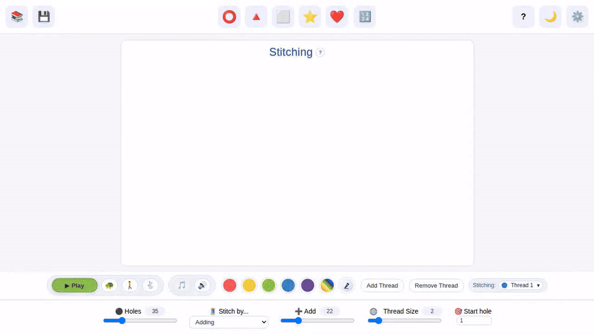

List stitch mode: hole sequence or addition steps
You now have two ways to stitch a thread with a list of values. Set the list type to "holes" to treat each possible consecutive ordered pair as a connection, or set the list type to "steps" to calculate each connection by adding the given value from the list, progressing one by one through it.
Onboarding autoplay tutorial
When you open StitchLab for the first time, or without any URL parameters, a spoken tutorial will start by default.
Paramless random thread startup preview
When you open StitchLab for the first time, or with no URL parameters, a random single-thread pattern will be generated.
Hole number rotation remapping
Now you can rotate your patterns by rotating the hole numbers on a stitching frame.
Active thread configuration overlay
When your pattern has more than one thread, StitchLab will show the config values for each active thread during stitch animation.
Formula stitch mode improvements
Formula mode returns! You can use basic operators and expressions to tell StitchLab how to calculate each target hole for your thread connections.
Stitch library workflow
Finally you can save your Stitching patterns, and load them again whenever you like!
Curve sewing cards viewer

Thanks to Cambridge Library, we now have images of the original sewing cards created by Mary Everest Boole!